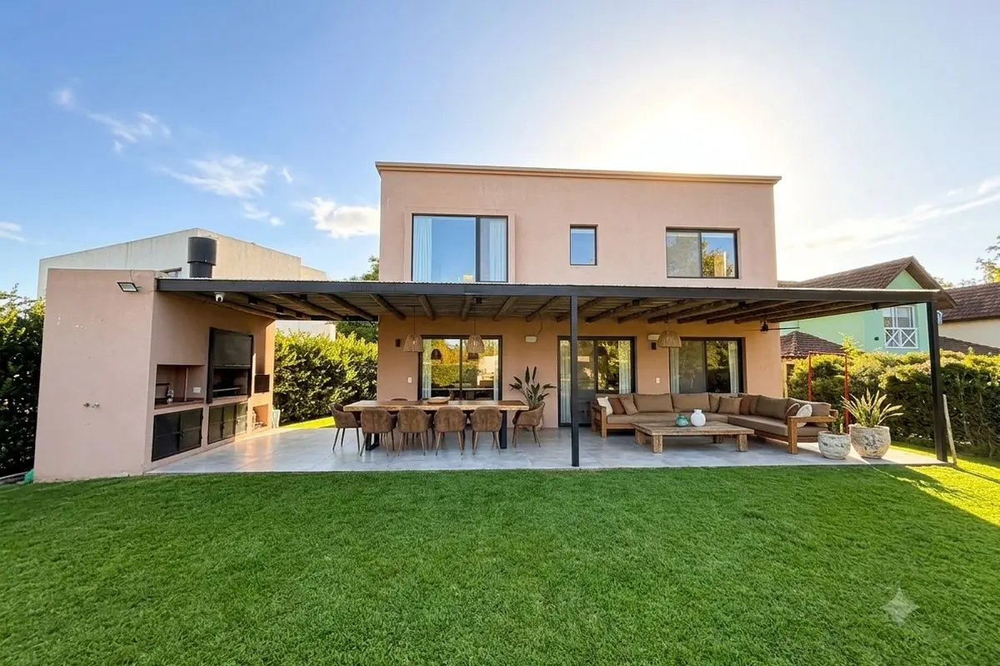
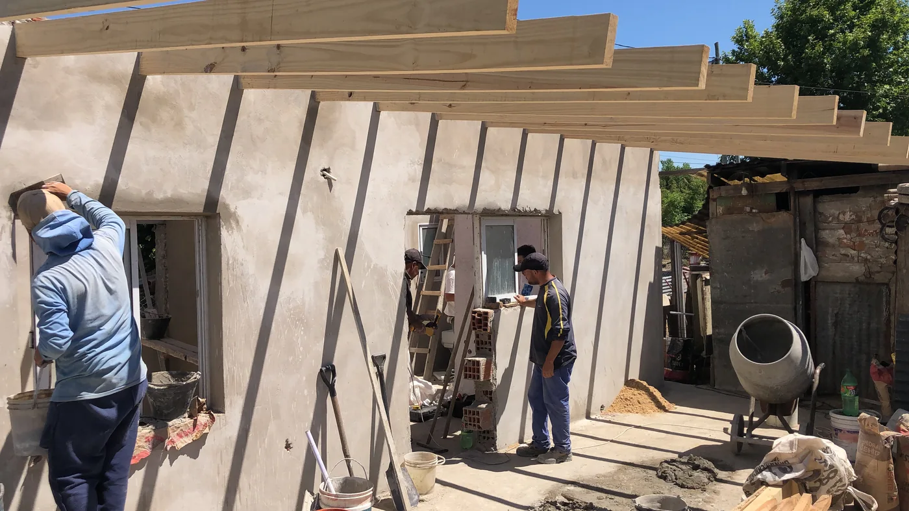
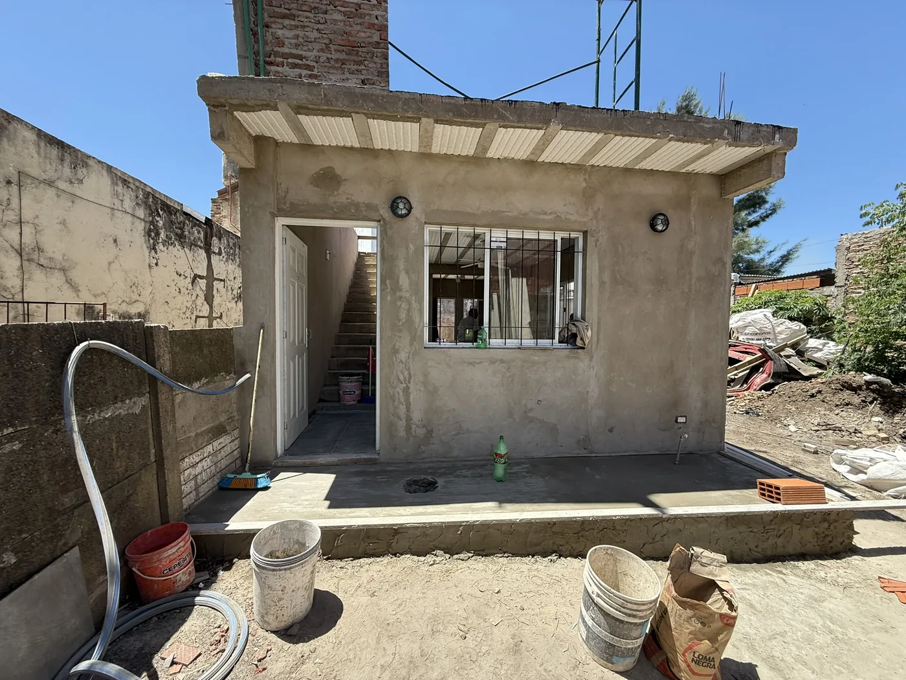
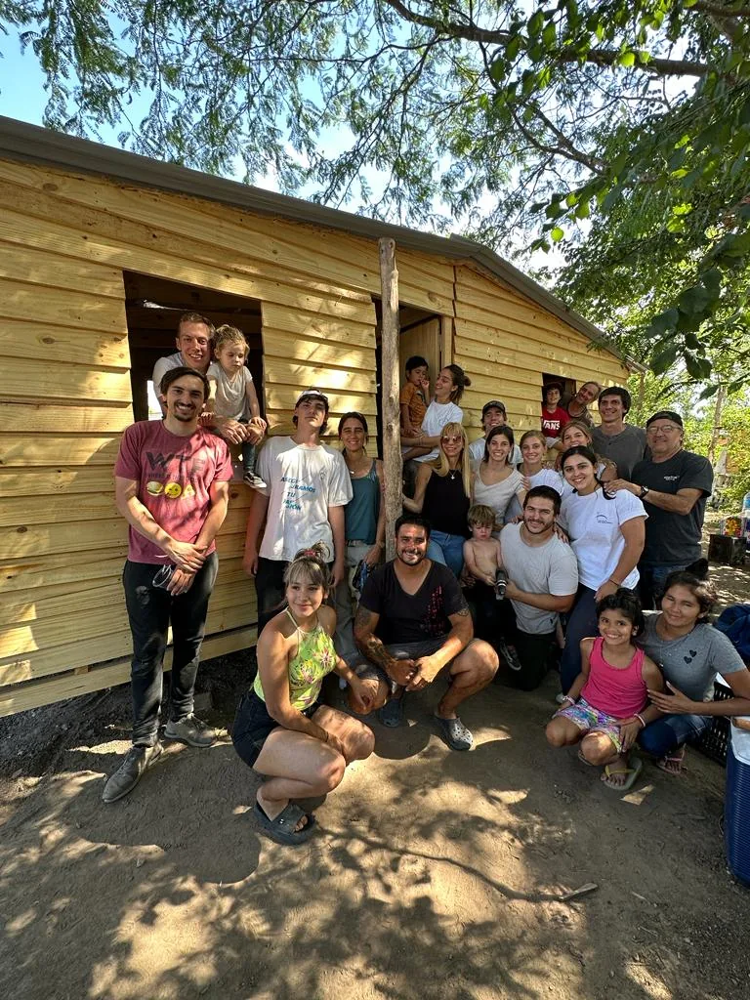

Casa El Portal
El Portal de Pilar · 2021 · 220 m² · Obra nueva
Vivienda unifamiliar de 220 m² proyectada y construida íntegramente por el estudio: proyecto, dirección y ejecución. Es, además, la casa propia del fundador — el estudio construye donde vive.

Compromiso
Arquitectura que da hogar
La misma convicción que guía cada obra la llevamos también donde más se necesita: construir un techo digno cambia una vida. Estos son algunos de los proyectos que hicimos con ese espíritu.

Casa Cofre
Sobre un terreno con una vivienda precaria, construimos un módulo de 4 × 8 m: una habitación, cocina y baño, con una galería integrada. Un hogar digno y completo donde antes no lo había.

Casa Julián
En un terreno compartido, levantamos un módulo de 4 × 8 m con baño, cocina integrada al ambiente principal y una escalera preparada para su futura expansión: una casa pensada para crecer con la familia.

Casas TECHO
Junto a mi familia construimos varias viviendas modulares de madera con Un Techo para mi País, sumando manos a la tarea de que ninguna familia se quede sin un lugar donde vivir.